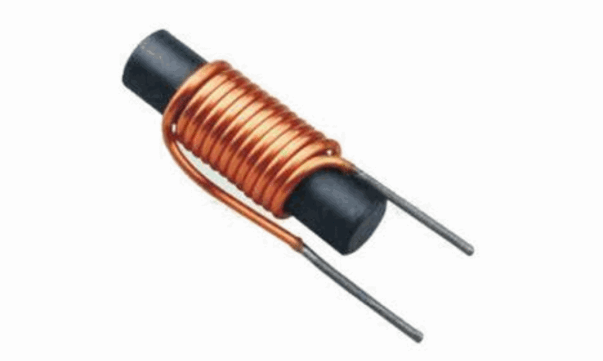
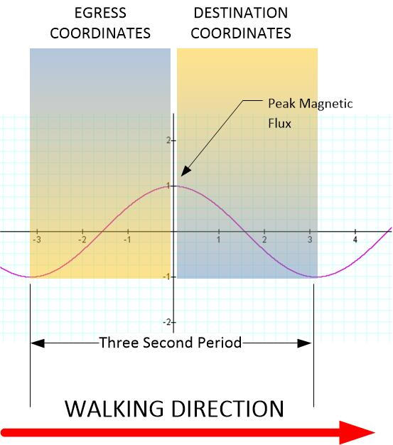

In this post we will cover a few basics regarding the operation of the egress portal for dimensional change. In this post our concentration will be on the magnetic flux itself as well as the way the traveler must enter the portal. For if you do not enter it properly, any thing could happen. And let’s not at all forget the horror movie “The Fly” to remind us of this issue. So let’s talk about this.
Good thing, we are not going to be too technical here. Heck! I can hear all the moans and groans across the globe as I release this post. (“Oh! Not another high jargon, high technology, a high mathematical treatise on world line adventures!)
Magnetic flux
The key to this entire dimensional portal concept is to use a “bath” of magnetism within a magnetic field. The magnetic field is used to erase the attachments of the human traveler with his environment. This field consists of a very strong magnetic force that cycles along a sinusoidal path.
A magnetic field is a vector field that describes the magnetic influence of electric charges in relative motion and magnetized materials. A charge that is moving parallel to a current of other charges experiences a force perpendicular to its own velocity. The effects of magnetic fields are commonly seen in permanent magnets, which pull on magnetic materials (such as iron) and attract or repel other magnets. -Wikipedia
Ugh.
Look, people, it need not be complex. When you have a magnet (an iron ferrite rod with a coil wrapped around it) and you pulse it (with electricity through the wire), a magnetic field arises.
Now, within the magnetic field you have the movement of charged electrons. That is, after all, what a magnetic field is. It is the movement of charged electrons.
So if you were to stand within the air gap (of a huge magnet) and receive a “bath” within a magnetic field, you would experience a “shower” of charged electrons.
This “shower” can be heavy or light. Depending on the design of the system.
The determination of whether it is “heavy” or “light” is known as it’s “magnetic flux”.
In physics, specifically electromagnetism, the magnetic flux (often denoted Φ or ΦB) through a surface is the surface integral of the normal component of the magnetic field flux density B passing through that surface. The SI unit of magnetic flux is the weber (Wb; in derived units, volt–seconds), and the CGS unit is the maxwell. Magnetic flux is usually measured with a fluxmeter, which contains measuring coils and electronics, that evaluates the change of voltage in the measuring coils to calculate the measurement of magnetic flux. -Wikipedia
Now there are all sorts of ways that we can describe these attributes and how to increase the density of the magnetic field, and the design of the magnet. All of which are extremely interesting, but would probably have my readership lynch me. So, what I am going to do is talk a little bit about the effect of a magnetic field on a human being.
The strongest magnetic field an average human would ever be exposed is in an MRI machine, which produces magnetic fields of about 1.5 to 7 tesla. Compared to this, the magnetic field strength of our Earth is just .0003 tesla. And the electromagnets at the LHC is around 8.3 tesla.
We can safely say that it is normal for humans to be exposed to magnetic fields with an average dose being around 0.0003 tesla.
We can also safely say that a magnetic field on the order of 7 tesla would be safe for humans to be exposed to. as this is the norm in the medical profession.
We also know that if we expose the human body to extreme levels of magnetic field(s) that it can actually levitate the human body. This would be on the order of 10+ tesla.
Now, I do not actually know the magnetic field density that is required to erase the egress coordinates attachments for the Alan Holt system to function, but my guess is that it would be somewhere between 5 to 10 tesla. too weak and it would not work, to great, and you might end up with physical disruptions inside the body. In general, ti would probably be best to be nearer to the large tesla number than away from it.
Phasing
Magnetic flux arises when you pulse electricity though a wire that is wrapped around an iron ferrite rod. That’s the basic, basic theory and function.

The moment that an electrical current enters the wire and the truns of wire around the ferrite core, a magnetic field develops. Then it ends.
The field ONLY exists when the electrons are zooming through the electric wire in the first place. Once they have established themselves, the magnetic flux ends. So in order to prevent this, you need to pulse the electricity. This pulsing will create a magnetic field that comes and goes in intensity.
If you look at the sketch of the egress portal and study the magnetic flux generator, you can see that the electrical substation would be used to transform the electricity into a system that would be used to generate the necessary flux bath to enable dimensional travel.

Now, by using diodes and the proper electronics we can control the size and shape of the pulsed magnetic field “bath”…
System overview
This is important because, we need to time HOW the person enters the field.
We want the field to be such that when the person enters the field, the magnetic flux is increasing to a point that his egress coordinates (and his person coordinates) are erased. Then during a peak period of intensity, all coordinates (frequencies of location) are rendered null. Then, the field starts to change, and the new set of destination coordinates are implanted on to the field.
It will work like this…

About the traveler
Now, the traveler will need to center and calm their mind. You see, the way that the mind functions must be neutral when it enters the field. If it is not neutral, then there is a risk of brain or mental instability when the traveler is exposed to peak flux density.
Thus, we need to implement the “feducials” to center the mind.

And that, boys and girls, is how MAJestic does it.
Conclusion
When you look at this dimensional portal from “my” point of view; from my experiences, and from my knowledge, you can see how everything fits together. This “new” information about a DIY dimensional portal strangely fits up and matches with MAJestic technology in widespread use back in the early 1980’s . Fully forty years ago.
It makes sense. It all makes sense. It all fits together.
Sure makes much more sense than being part of a fleet of “space marines” fighting a global cabal of disguised Reptilians who want to enslave the human race. Or have invisible star people give us the gift of “magic crystals” that were developed in Atlantis many centuries ago. Or, to be part of an elite team of people who were selected at birth to “father” the new human race.
Ugh!
Now, people(!), I did not pull of of this shit out of my ass. I am either a [1] genius, [2] a complete lunatic, or [3] someone who is telling the truth. I’ve given enough, heck!, more than enough information herein for you the reader to choose.
Pick your “poison”.
This is how it’s done. This is how it works. This is what is going on, and with all that in mind… know that I really want you the reader to live a good, happy and safe life. I want you all to control your environment and do everything in your power to ply off the gook and nonsense spewed onto you by over five decades of intensive lies and manipulations.
Time to go forth and party!
▶ Media file: 5d638b0ef6e5b6bf361128ec1ff8a4fd.mp4